什么是缠论的走势类型
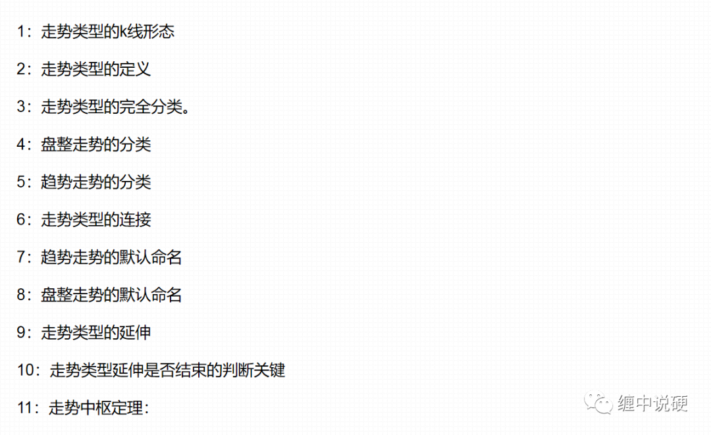
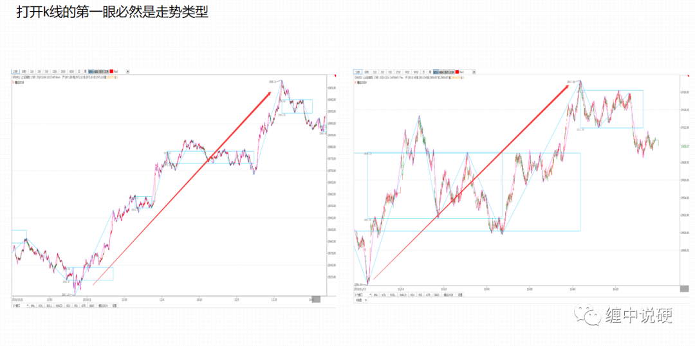
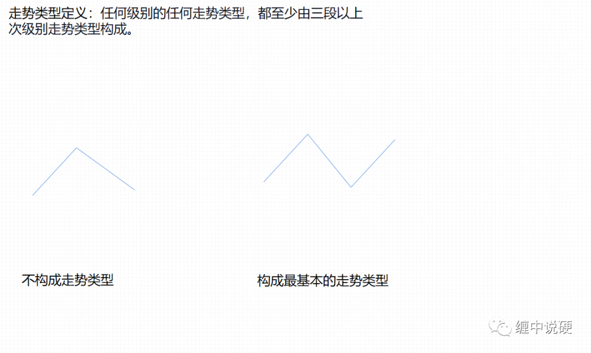
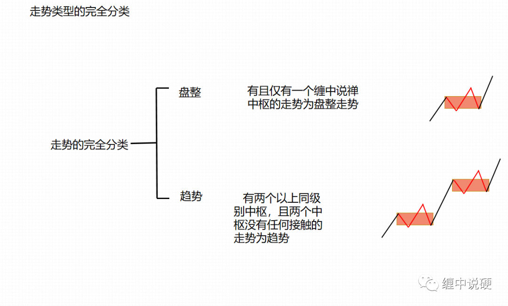
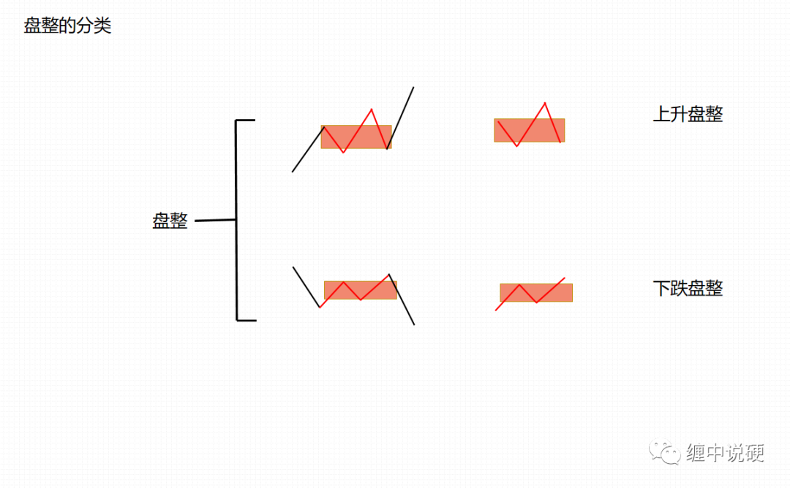
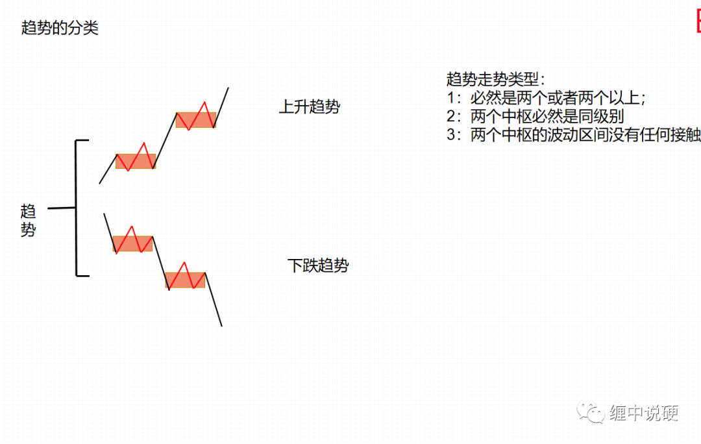
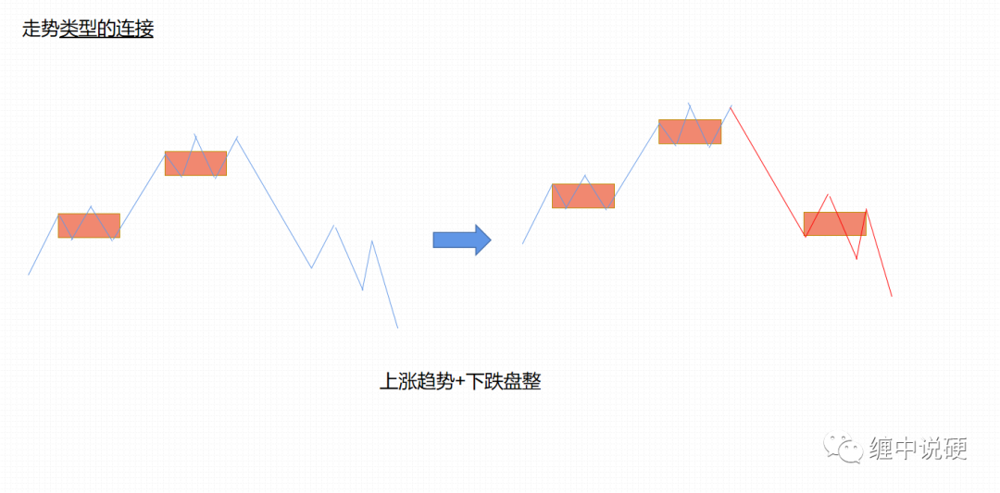
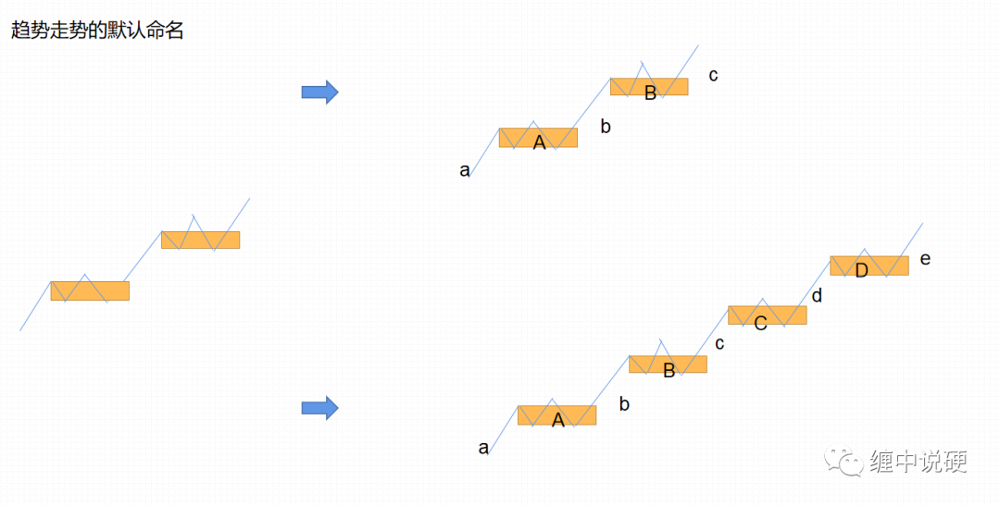
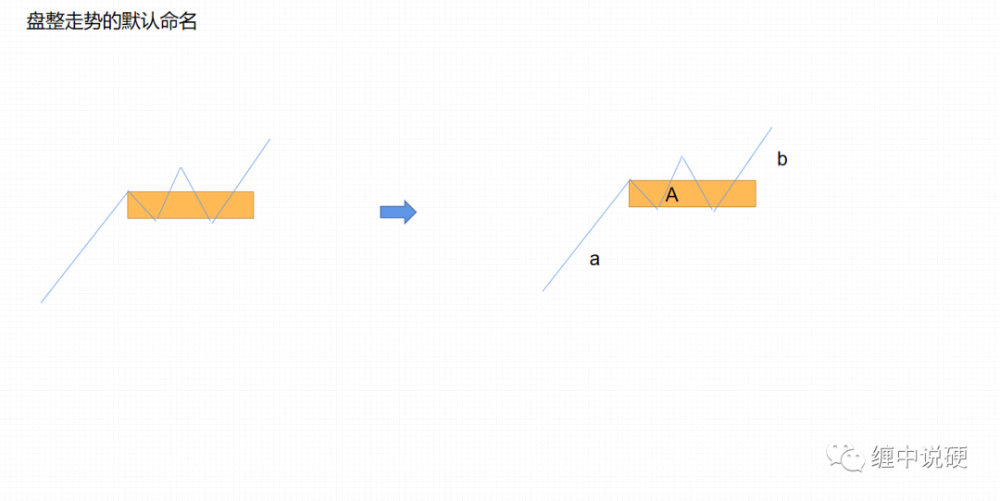
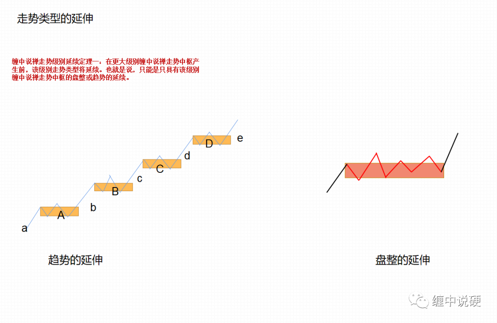
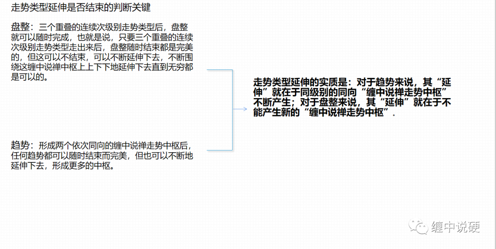
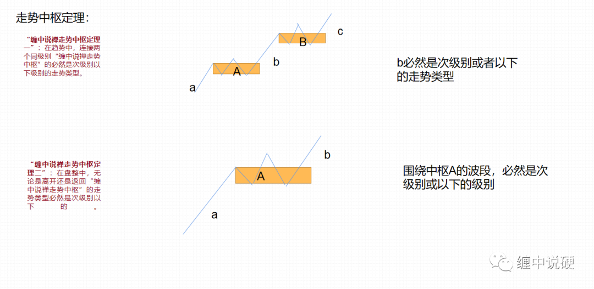
声明原创要300字缠论语录水一下。
买卖点相关定理、定律和程序：
缠中说禅小背驰-大转折定理：小级别背驰引发大级别向下的必要条件是该级别走势的最后一个次级别中枢出现第三类卖点；小级别背驰引
发大级别向上必要条件是该级别走势的最后一个次级别中枢出现第三类买点。
买卖点相关定理、定律和程序：
缠中说禅背驰-转折定理：某级别的趋势的背驰将导致该趋势最后一个中枢的级别扩展、该级别更大级别的盘整或该级别以上级别的反趋势。
买卖点相关定理、定律和程序：
缠中说禅趋势转折定律：任何级别的上涨转折都是由某级别的第一类卖点构成；任何级别的下跌转折都是由某级别的第一类买点构成。
买卖点相关定理、定律和程序：
缠中说禅精确大转折点寻找程序定理：某大级别的转折点，可以通过不同级别背驰段的逐级收缩范围而确定。